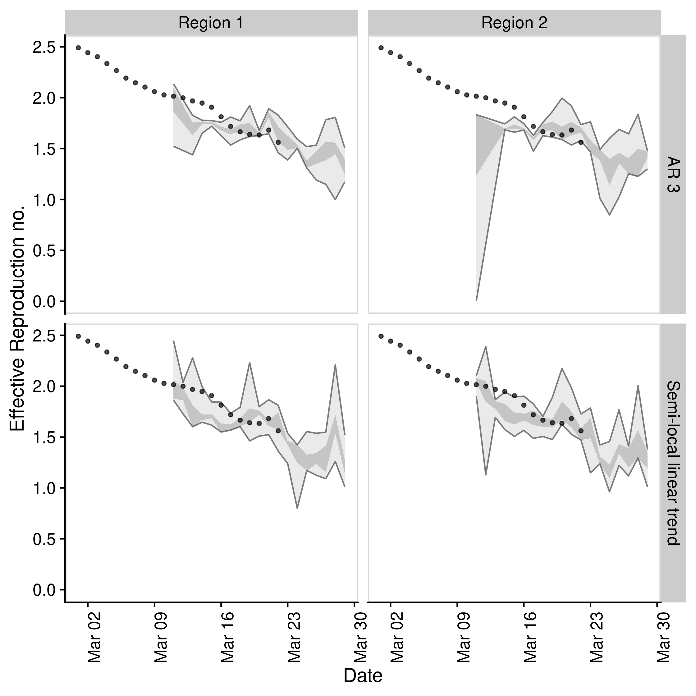
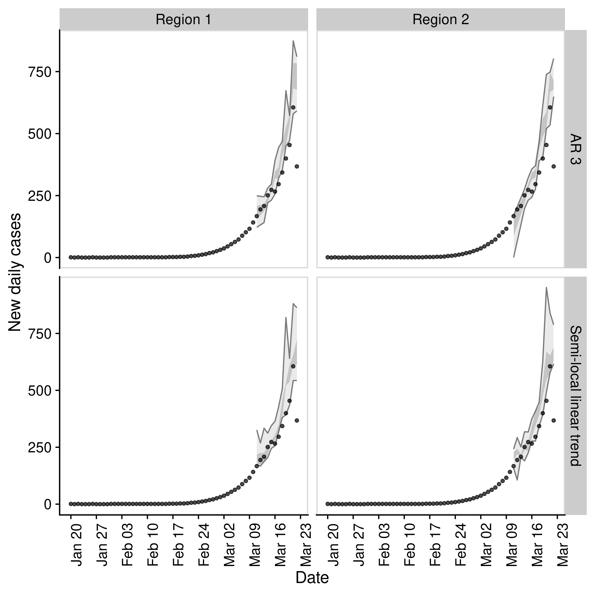

This package provides tooling to forecast the time-varying reproduction number and use this to forecast reported case counts via a branching process. It supports a range of time series modelling packages including bsts, forecast, and fable. It also supports ensembles via stackr and forecastHyrbid. Forecasts can be assessed by iteractively fitting and then using proper scoring rules (via scoringutils and scoringRules) to compare to both observed case counts and estimated reproduction numbers.
Installation
Install the stable development version of the package with:
install.packages("EpiSoon", repos = "https://epiforecasts.r-universe.dev")Install the unstable development version of the package with (few users should need to do this):
remotes::install_github("epiforecasts/EpiSoon")Quick start
- Load packages (
bstsandfablefor models,ggplot2for plotting, andcowplotfor theming)
- Set up example data (using
EpiSoon::example_obs_rtsandEpiSoon::example_obs_casesas starting data sets). When generating timeseries withEpiNowuseget_timeseriesto extract the required data.
obs_rts <- EpiSoon::example_obs_rts %>%
dplyr::mutate(timeseries = "Region 1") %>%
dplyr::bind_rows(EpiSoon::example_obs_rts %>%
dplyr::mutate(timeseries = "Region 2"))
obs_cases <- EpiSoon::example_obs_cases %>%
dplyr::mutate(timeseries = "Region 1") %>%
dplyr::bind_rows(EpiSoon::example_obs_cases %>%
dplyr::mutate(timeseries = "Region 2"))- Define the list of models to be compared.
models <- list(
"AR 3" =
function(...) {
EpiSoon::bsts_model(
model =
function(ss, y) {
bsts::AddAr(ss, y = y, lags = 3)
}, ...
)
},
"Semi-local linear trend" =
function(...) {
EpiSoon::bsts_model(
model =
function(ss, y) {
bsts::AddSemilocalLinearTrend(ss, y = y)
}, ...
)
},
"ARIMA" =
function(...) {
EpiSoon::fable_model(model = fable::ARIMA(y ~ time), ...)
}
)- Compare models across timeseries (change the
future::planto do this in parallel).
future::plan("sequential")
## Compare models
forecasts <- EpiSoon::compare_timeseries(obs_rts, obs_cases, models,
horizon = 7, samples = 10,
serial_interval = EpiSoon::example_serial_interval
)
#> Warning: There were 40 warnings in `dplyr::mutate()`.
#> The first warning was:
#> ℹ In argument: `eval = furrr::future_pmap(...)`.
#> Caused by warning:
#> ! Unknown or uninitialised column: `.distribution`.
#> ℹ Run `dplyr::last_dplyr_warnings()` to see the 39 remaining warnings.
forecasts
#> $forecast_rts
#> # A tibble: 511 × 12
#> timeseries model foreca…¹ date horizon median mean sd bottom lower
#> <chr> <chr> <chr> <date> <int> <dbl> <dbl> <dbl> <dbl> <dbl>
#> 1 Region 1 AR 3 2020-03… 2020-03-05 1 2.26 2.25 0.0504 2.17 2.25
#> 2 Region 1 AR 3 2020-03… 2020-03-06 2 2.21 2.19 0.0729 2.09 2.19
#> 3 Region 1 AR 3 2020-03… 2020-03-07 3 2.15 2.12 0.0957 1.95 2.13
#> 4 Region 1 AR 3 2020-03… 2020-03-08 4 2.07 2.05 0.128 1.86 2.06
#> 5 Region 1 AR 3 2020-03… 2020-03-09 5 2.00 1.98 0.165 1.69 2.00
#> 6 Region 1 AR 3 2020-03… 2020-03-10 6 1.95 1.93 0.173 1.61 1.93
#> 7 Region 1 AR 3 2020-03… 2020-03-11 7 1.90 1.86 0.199 1.52 1.86
#> 8 Region 1 AR 3 2020-03… 2020-03-07 1 2.11 2.11 0.0389 2.02 2.10
#> 9 Region 1 AR 3 2020-03… 2020-03-08 2 2.04 2.03 0.0449 1.94 2.02
#> 10 Region 1 AR 3 2020-03… 2020-03-09 3 1.97 1.94 0.0713 1.80 1.96
#> # … with 501 more rows, 2 more variables: upper <dbl>, top <dbl>, and
#> # abbreviated variable name ¹forecast_date
#>
#> $rt_scores
#> # A tibble: 399 × 12
#> timeseries model forec…¹ date horizon mad bias dss crps log_s…²
#> <chr> <chr> <chr> <date> <int> <dbl> <dbl> <dbl> <dbl> <dbl>
#> 1 Region 1 AR 3 2020-0… 2020-03-05 1 0.0514 -0.2 -5.98 0.0110 -1.96
#> 2 Region 1 AR 3 2020-0… 2020-03-06 2 0.0630 0.4 -5.34 0.0176 -1.55
#> 3 Region 1 AR 3 2020-0… 2020-03-07 3 0.0879 0 -4.72 0.0232 -1.31
#> 4 Region 1 AR 3 2020-0… 2020-03-08 4 0.129 -0.2 -4.01 0.0345 -0.961
#> 5 Region 1 AR 3 2020-0… 2020-03-09 5 0.165 -0.4 -3.44 0.0514 -0.764
#> 6 Region 1 AR 3 2020-0… 2020-03-10 6 0.170 -0.4 -3.25 0.0578 -0.713
#> 7 Region 1 AR 3 2020-0… 2020-03-11 7 0.186 -0.6 -2.67 0.0902 -0.483
#> 8 Region 1 AR 3 2020-0… 2020-03-07 1 0.0283 -0.8 -5.53 0.0207 -2.05
#> 9 Region 1 AR 3 2020-0… 2020-03-08 2 0.0273 -1 -3.32 0.0506 -0.712
#> 10 Region 1 AR 3 2020-0… 2020-03-09 3 0.0398 -1 -2.13 0.0864 -0.162
#> # … with 389 more rows, 2 more variables: ae_median <dbl>, se_mean <dbl>, and
#> # abbreviated variable names ¹forecast_date, ²log_score
#>
#> $forecast_cases
#> # A tibble: 399 × 12
#> timeseries model forecas…¹ date horizon median mean sd bottom lower
#> <chr> <chr> <chr> <date> <int> <dbl> <dbl> <dbl> <dbl> <dbl>
#> 1 Region 1 AR 3 2020-03-… 2020-03-05 1 68.5 67.5 5.91 59 61
#> 2 Region 1 AR 3 2020-03-… 2020-03-06 2 81.5 80.5 11.8 61 72
#> 3 Region 1 AR 3 2020-03-… 2020-03-07 3 97 94.4 15.7 68 94
#> 4 Region 1 AR 3 2020-03-… 2020-03-08 4 114 116. 13.9 102 102
#> 5 Region 1 AR 3 2020-03-… 2020-03-09 5 139 131. 24.0 98 132
#> 6 Region 1 AR 3 2020-03-… 2020-03-10 6 150. 156. 23.9 117 141
#> 7 Region 1 AR 3 2020-03-… 2020-03-11 7 186. 182. 41.1 122 155
#> 8 Region 1 AR 3 2020-03-… 2020-03-07 1 94.5 92.7 8.30 80 94
#> 9 Region 1 AR 3 2020-03-… 2020-03-08 2 108 107. 6.34 95 104
#> 10 Region 1 AR 3 2020-03-… 2020-03-09 3 122. 121. 13.8 94 115
#> # … with 389 more rows, 2 more variables: upper <dbl>, top <dbl>, and
#> # abbreviated variable name ¹forecast_date
#>
#> $case_scores
#> # A tibble: 399 × 12
#> timeseries model sample forecast…¹ date horizon mad bias dss crps
#> <chr> <chr> <chr> <chr> <date> <int> <dbl> <dbl> <dbl> <dbl>
#> 1 Region 1 AR 3 1 2020-03-04 2020-03-05 1 6.67 0.4 4.09 2.75
#> 2 Region 1 AR 3 1 2020-03-04 2020-03-06 2 11.1 0.4 5.28 4.77
#> 3 Region 1 AR 3 1 2020-03-04 2020-03-07 3 13.3 0.4 5.58 6.3
#> 4 Region 1 AR 3 1 2020-03-04 2020-03-08 4 14.1 0.6 6.30 6.85
#> 5 Region 1 AR 3 1 2020-03-04 2020-03-09 5 29.7 0.2 6.70 11.1
#> 6 Region 1 AR 3 1 2020-03-04 2020-03-10 6 14.1 0.6 6.68 7.7
#> 7 Region 1 AR 3 1 2020-03-04 2020-03-11 7 42.3 0.2 7.47 13.1
#> 8 Region 1 AR 3 1 2020-03-06 2020-03-07 1 8.90 0.4 4.48 3.65
#> 9 Region 1 AR 3 1 2020-03-06 2020-03-08 2 5.19 0.6 4.23 3.68
#> 10 Region 1 AR 3 1 2020-03-06 2020-03-09 3 13.3 0.2 5.26 4.1
#> # … with 389 more rows, 2 more variables: ae_median <dbl>, se_mean <dbl>, and
#> # abbreviated variable name ¹forecast_date- Plot an evaluation of Rt forecasts using iterative fitting.
EpiSoon::plot_forecast_evaluation(forecasts$forecast_rts, obs_rts, c(7)) +
ggplot2::facet_grid(model ~ timeseries) +
cowplot::panel_border()
- Plot an evaluation of case forecasts using iterative fitting
EpiSoon::plot_forecast_evaluation(forecasts$forecast_cases, obs_cases, c(7)) +
ggplot2::facet_grid(model ~ timeseries, scales = "free") +
cowplot::panel_border()
- Summarise the forecasts by model scored against observed cases
EpiSoon::summarise_scores(forecasts$case_scores)
#> # A tibble: 12 × 9
#> score model bottom lower median mean upper top sd
#> <chr> <chr> <dbl> <dbl> <dbl> <dbl> <dbl> <dbl> <dbl>
#> 1 ae_median AR 3 0.85 9 24.5 5.69e+1 91 2.27e2 6.28e+1
#> 2 ae_median Semi-local linea… 0.613 8.5 24.2 5.11e+1 92.4 1.88e2 5.86e+1
#> 3 bias AR 3 -1 0 0.6 4.47e-1 1 1 e0 6.13e-1
#> 4 bias Semi-local linea… -1 0.2 0.6 4.81e-1 1 1 e0 5.90e-1
#> 5 crps AR 3 2.94 6.57 17.8 4.69e+1 79.3 2.00e2 5.59e+1
#> 6 crps Semi-local linea… 2.80 6.82 15.6 4.18e+1 69.5 1.60e2 5.12e+1
#> 7 dss AR 3 4.53 6.09 8.33 1.29e+1 15.9 4.67e1 1.09e+1
#> 8 dss Semi-local linea… 4.56 6.20 7.74 1.28e+1 12.7 5.07e1 1.35e+1
#> 9 mad AR 3 7.93 13.3 21.5 2.61e+1 34.1 8.51e1 1.76e+1
#> 10 mad Semi-local linea… 6.10 12.8 19.3 2.46e+1 31.1 6.58e1 1.70e+1
#> 11 se_mean AR 3 1.15 81 784 7.29e+3 8855. 4.72e4 1.56e+4
#> 12 se_mean Semi-local linea… 0.524 79.2 595. 6.26e+3 8663. 4.16e4 1.31e+4Contributing
File an issue here if you have identified an issue with the package. Please note that due to operational constraints priority will be given to users informing government policy or offering methodological insights. We welcome all contributions, in particular those that improve the approach or the robustness of the code base.